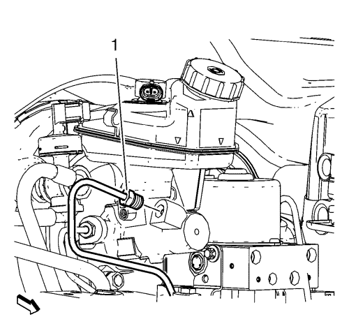
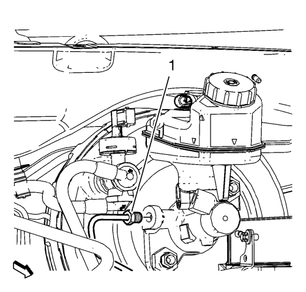
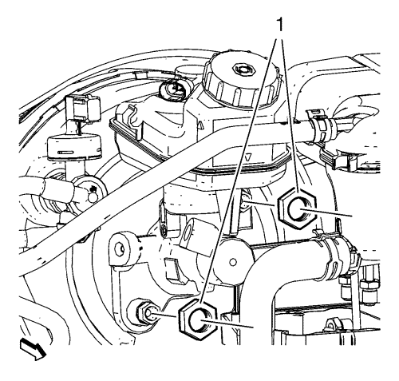

Sustitución del cilindro maestro — Volante a la izquierda
Procedimiento de desmontaje
Advertencia: Consulte Advertencia de líquido de frenos irritante en la sección Prólogo
Precaución: Consulte Advertencia sobre los efectos del líquido de frenos sobre la pintura y los componentes eléctricos en la sección Prólogo
- Desmonte la cubierta de apertura del panel de extensión superior del salpicadero. Consultar Sustitución de la cubierta de apertura del panel de expansión superior del salpicadero .
- Desmonte la bandeja de la batería. Consultar Sustitución de la bandeja de la batería .

Nota: NO desconecte los tubos flexibles del refrigerante del motor.
- Desmonte el clip (2) del depósito de expansión del radiador.
- Desmonte el depósito de expansión del radiador (1).
Ponga a un lado el depósito de expansión del radiador (1).
- Desconecte el interruptor del indicador del nivel de líquido de frenos y sepárelo del depósito de líquido de frenos.

- Desconecte el herraje del tubo de freno secundario del cilindro maestro (1).
Tape el herraje de los tubos de freno y la boca de salida del cilindro maestro para evitar la contaminación y la pérdida de líquido de frenos.

- Desconecte el herraje del tubo de freno primario del cilindro maestro (1).
Tape el herraje de los tubos de freno y la boca de salida del cilindro maestro para evitar la contaminación y la pérdida de líquido de frenos.

- Desmonte y DESECHE las tuercas de cilindro maestro (1).
- Desmonte el cilindro maestro con el depósito de líquido de frenos.
- Compruebe la junta del cilindro maestro al servofreno de depresión por si estuviera dañada, y cámbiela si es necesario.
- Desmonte el depósito del cilindro maestro, si es necesario. Consultar Sustitución de depósito acumulador de cilindro maestro .
Procedimiento de montaje
- Monte el depósito del líquido de frenos en el cilindro maestro. Consultar Sustitución de depósito acumulador de cilindro maestro .
- Asegúrese de que la junta del cilindro maestro al servofreno de depresión está debidamente asentada en el cañón del cilindro maestro.
Precaución: Consulte Precaución con las fijaciones en la sección Prólogo
- Coloque las NUEVAS tuercas de cilindro maestro (1) y apriételas hasta 50 N·m (37 lib. pie).
- Monte el mazo de cables del interruptor del indicador de nivel del líquido de frenos en el depósito del líquido de frenos y emborne el conector eléctrico.
- Conecte el herraje del tubo de freno primario del cilindro maestro (1) y apriételo a 18 N·m (13 lib. pie).
- Conecte el herraje del tubo de freno primario del cilindro maestro (1) y apriételo a 18 N·m (13 lib. pie).
- Instale el depósito de expansión del radiador (1).
- Monte el clip (2) del depósito de expansión del radiador.
- Monte la bandeja de la batería. Consultar Sustitución de la bandeja de la batería .
- Monte la cubierta de apertura del panel de extensión superior del salpicadero. Consultar Sustitución de la cubierta de apertura del panel de expansión superior del salpicadero .
- Purgue el sistema de sistema de frenos hidráulicos. Consultar Purga de aire del sistema de frenos hidráulicos .
| © Copyright Chevrolet. All rights reserved |